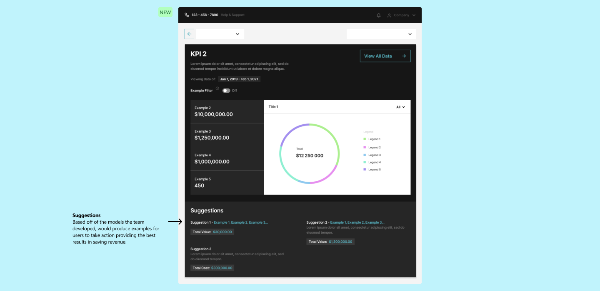

1 UX/UI Designer, 2 Developers, 1 Co-Founder, 1 Founder, 2 Interns.
1 Year (2021 - 2022)
Web (> 425px)
UX, UI, UXR, and Design System
Perspect Analytics is built on advanced AI/ML technologies and extensive experience in maintenance, provides the best software solutions and professional service to organizations in manufacturing, infrastructure, facilities and other asset-intensive industries to streamlining and optimizing their operations.
Perspect wanted to eliminate non-value-added MRO activities while creating a responsive, data-driven MRO culture. Actionable suggestions with measurable ROIs are then provided to facilitate timely implementation for continuous operational improvements.
The product needed to be designed for 3 distinct user groups each with different use cases.
Identify current UX/UI issues, understand development constraints, optimize userflow through research and best practices.
Simplify 40+ different KPI measurements into easy to understand and interactive visuals.
After working with the immediate team, and our partners, I identified the UX and UI pain points of the product. I developed a plan that prioritized rehauling the entire UX and UI of the product. The rehaul would include targeting our product to 3 different user groups instead of the current generalized design for 1 user group. The rehaul would also change how the UI displays data to users, and allow for actionable inputs from users to get results they needed.
Launched intelligentMRO 1.0
Reduced Inventory Annual Holding Cost.
Reduced Unexpected Outage Durations.
Perspect's general design that focused on one user group indicated friction points in the user journey.
Outdated UI that looked like it emerged from 2009. Multiple levels of unnecessary navigation that if users continued to use the product, it would become cluttered with pop outs and links.
No information architecture to follow in order to display the 40+ different KPIs which housed thousands of unique inventory items.
Did not have a design system to follow, which resulted in different typography, different hues, different backgrounds, and overall inconsistent patterns of design through out the product.
To fully understand the main pain points within the product, I had 1on1 meetings with our demo clients, I performed a UX research using Google’s Heart framework, developed and outlined multiple userflows, and lastly planned the project roadmap.
Conducted a competitive market analysis on leading MRO applications.
Interviewed 4 demo clients to gather pain points that they had with the current state of the product.
Completed a holistic UX audit of the MVP product. This turned in to a UX backlog for features to work on in the roadmap.
After benchmarking the current products' UX, learning about the problem, I dived into learning about the different KPIs used within the data analytics platform. Once I understood most of the KPIs', I started tackling the main UX issues the product had, along with overhauling the UI using a new Design System.

When users toggled each column button, it would only minimize the width of the column to 16px. The columns were still took out table space. There was no categorization method for each column, as some columns data belonged to the same grouping. After our user interviews, one of the main painpoints they struggled with was the sheer amount of data each table had. It made it difficult for them to filter/sort the data points they needed.
Each table had a default state in which there were fixed column headers, but the other column headers could be configured to match the users preferences.
Overhauled the UI to make the table look less like a table from 2009. I also chose to right-align the values as most users were use to Excel's view of data
Due to the nature of SKUs, the legacy systems' form of navigation was very complicated. Entities and SKUs would get lost in searches as users would be juggling between two different side panels. Another issue was they had to navigate a folder-search design when diving deeper into the entity's SKUs.
Reduced the left panel expansion by 1 level, introduced groupings within the panel slots, and increased CTA sizing and font sizing for easier user interaction.
Created a simple login screen, followed by a programs selection page that allowed users to choose what program they wanted to load. The programs selection page also showed future programs that would be added to the product.
Due to the large amounts of KPIs, organizing each in their respected groupings was important within the product. However, in the legacy system, the KPIs were organized in a file-dropdown format and did not show clearly show what types of KPIs were being displayed. The new design relocated the groupings from the left panel onto a screen. This allowed for users to customize their configurations and pushed prioritization to the users.
To solve the problem of the confusing information hierarchy, I designed an overview that would focus on specific KPI groupings the users might be interested in, and from there, they could navigate to their preferred KPI.
The VC’s primary design was to provide managers and executives with immediate actions they can take to reduce holding costs. This design allowed for managers and executives to quickly identify the problem at hand. The algorithms within Virtual Consultant saves managers time from having to look into the raw data.
I built out the new design system. I referenced the Carbon Design System, but used it as a basis to know which design tokens the product lacked/needed. I built every design token and component from scratch. I worked closely with the Engineering team to design a cohesive, and understandable system that they could reference and use with ease.
01
First professional full-time design position
Without their help and support, I would not have become the Designer I am today. They taught me all about an industry I had no prior knowledge in, and supported my growth as a Product Designer.
02
Launching a product to the market.
The product launch was a success. We presented at a conference, and even managed to make some of our features open to the public, which you can test here. No matter the size of the team, either 50+ people or 1 person, a great product can be shipped. Joining Perspect taught me a lot about my individual skills as a design contributor. I learned to move fast, design with impact, and to focus first on what’s needed for users instead of what’s wanted from users.
You May Also Like